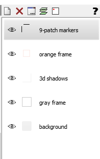
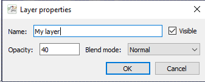

Layers
Introduction
As discussed in Basic concepts, Greenfish Icon Editor Pro documents consist of pages, which consist of frames, which in turn can have zero or more layers. The number of layers can vary from frame to frame.
Layers are displayed in the Layer list on the right side of the editor.

Warning: Layers can only be preserved if you save your work in the .GFIE format. In other formats, such as PNG, only the flattened image can be stored. Reopening those files will only show a single Background layer, although the image itself will look the same.
Selecting layers
Painting tools will only draw on the selected layers.
- For example, if you want to use the brush on a different layer, first select that layer in the layer list.
- If multiple layers are selected (e.g. with Ctrl-click), the brush will draw on all of them at the same time.
- If no layers are selected, the brush cannot be used. In this case, a "No" cursor appears and the message "[No layers are selected]" is shown in the status bar.
Visibility
You can hide or show a layer with the eye icon.
Invisible layers can also be drawn to, provided that they are selected in the list.
Properties
You can edit a layer's properties by double-clicking an item in the layer list, or by choosing Layers | Layer properties.

- You can set the layer's name, opacity and blend mode.
- If you set the blend mode to Mask, the layer will act as a mask for the other layer right below it. Namely, the other layer's alpha channel will be multiplied with the mask alpha when rendering. So those pixels will show through where the mask is opaque, and those pixels will be hidden where the mask is transparent.
- Other blend modes can be used for special effects. For example:
- Multiply simulates an overlain slide drawn with permanent marker.
- Screen looks like shooting two images on the same film.
- Lighter Color compares the luminosity of the layer and background colors and chooses the lighter one.
← Index